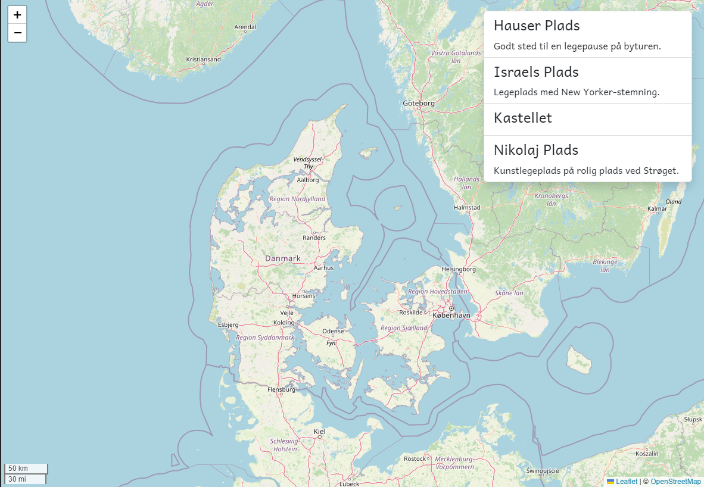

So, let’s add a center: Center property to the app component class. The Center interface must be imported from @loopme/leaflet
Next, assign this property to an instance of a center. Use these values:
- latitude: 56.360029
- longitude: 10.746635
Now bind the center property on the <leaflet> element to your center instance variable in the app component.
Reload the application and watch the map being centered on Denmark!
